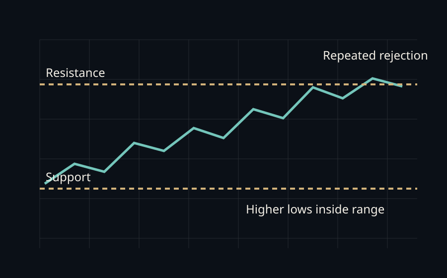
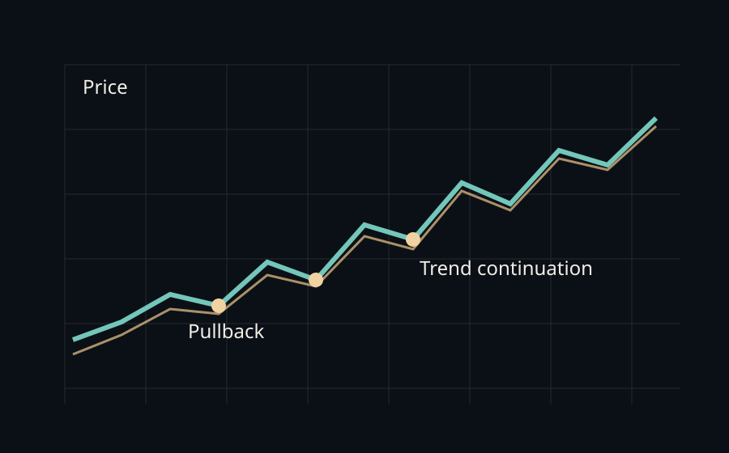
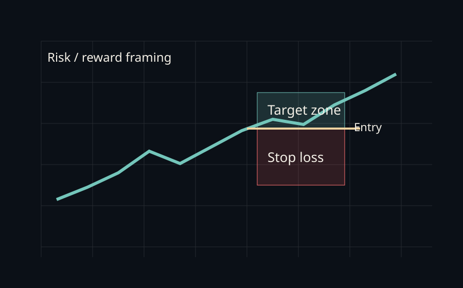

Figure A. Support, resistance, and repeated rejection inside a range.
Free Sample
This sample shows the tone and structure of the manual: practical, visual, and focused on helping a first-time reader understand what a chart is doing before risking money.
Contents
The free version should prove the quality of the material before any paid expansion.
Understanding buyers, sellers, price discovery, and why volatility exists.
Learning how price bars tell you about momentum, pause, and rejection.
Why your stop, size, and invalidation matter more than your prediction.
Chapter 1
A chart is not magic. It is a visual record of disagreement. At every price, some participants think the asset is cheap and others think it is expensive. When one side becomes more aggressive, price moves.
In stocks, prices react to earnings, guidance, rates, sentiment, and capital rotation. In crypto, prices also react to liquidity conditions, leverage, positioning, and narrative intensity. A beginner does not need to predict everything. A beginner needs to learn how to observe structure.
Chapter 2
Candles summarize the battle inside a time period. The body shows the distance between open and close. The wicks show where price traveled but did not hold. Long upper wicks can imply rejection. Long lower wicks can imply demand, although context always matters.

Figure A. Support, resistance, and repeated rejection inside a range.
A clean beginner question is simple: is the market trending, ranging, or breaking out of a range? That question is more useful than trying to predict the exact next candle.
Chapter 3
An uptrend usually prints higher highs and higher lows. A downtrend usually prints lower highs and lower lows. Pullbacks are normal. In strong markets, pullbacks often retrace into prior breakout zones before trend resumes.

Figure B. Trend continuation often includes orderly pullbacks rather than straight lines.
Beginners lose money when they confuse a pullback with a reversal. The difference is not emotion. The difference is structure: does the market still respect its higher-low or lower-high sequence?
Chapter 4
Most new traders think the job is to find the next big winner. The real job is to avoid oversized losses. A trade should be defined before entry: where you enter, where you are wrong, and where you will take profit if the idea works.

Figure C. Define the trade before pressing the button.
Chapter 5
Stocks have earnings reports, sector rotations, and institutional benchmarks. Crypto trades more continuously, more reflexively, and often with higher retail and leverage participation. That means crypto can move faster and punish bad risk discipline harder.
A beginner should not treat volatility as an invitation to oversize. Volatility is a reason to reduce size, wait for cleaner levels, and respect uncertainty.
Chapter 6
Risk Note
Madeesh P. Nissanka is not a financial advisor. CFTC guidance is clear that digital assets are risky and promises of easy profits are a red flag. This sample is educational only and should train the reader to think in probabilities, not guarantees.
Disclaimer
Madeesh P. Nissanka is not a financial advisor, broker, or investment adviser. This sample is for educational and informational purposes only and is not financial, investment, tax, or legal advice.
No promise or guarantee of profit is made. Markets involve real risk, and readers are solely responsible for any decision they make after consuming this material.